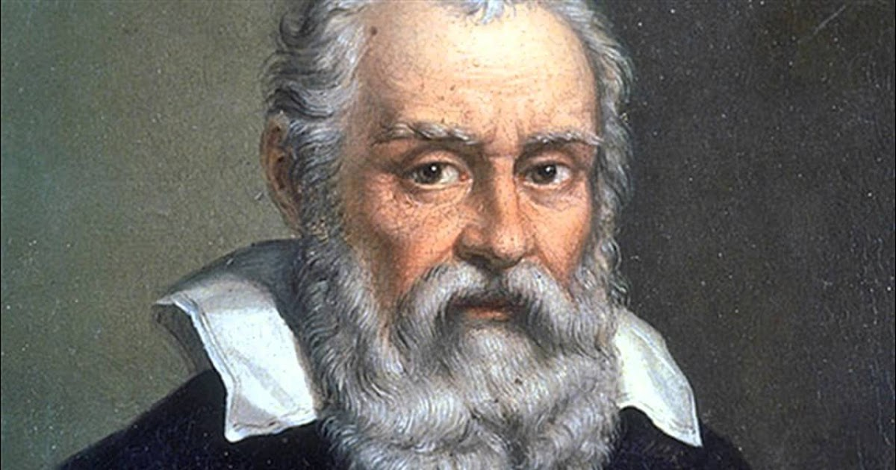

Galileo Galilei
physicist and engineer

About Galilei
Galileo was the oldest of six children. His father,
Vincenzo Galilei was a musician, his mother's name was
Giulia degli Ammannati. Galileo was never married but
had a temporary relationship with Marina Gamba. they
met on one of Galileos many trips to Venice. Marina
lived in Galileo's house and had 3 children, Virginia,
Livia, and Vincenzio. His two daughters, Sister Maria
Celeste and Sister Arcangela, were put in convents,
which were religious towns. These daughters were raised
as nuns.Copernican heliocentrism is the astronomical
model developed by Nicolaus Copernicus and published in 1543.
This model positioned the Sun at the center of the Universe, motionless,
with Earth and the other planets orbiting around it in circular paths
modified by epicycles, and at uniform speeds. The Copernican model
displaced the geocentric model of Ptolemy that had prevailed fo
centuries, which had placed Earth at the center of the Universe.
Although he had circulated an outline of his own
heliocentric theory to colleagues sometime before 1514,
he did not decide to publish it until he was urged to do
so later by his pupil Rheticus. Copernicus's challenge
was to present a practical alternative to the Ptolemaic
model by more elegantly and accurately determining the
length of a solar year while preserving the metaphysical
implications of a mathematically ordered cosmos. Thus,
his heliocentric model retained several of the Ptolemaic
elements, causing inaccuracies, such as the planets'
circular orbits, epicycles, and uniform speeds,
Career as a scientist
In 1589, he was appointed to the chair of mathematics in Pisa.
In 1591, his father died, and he was entrusted with the care of
his younger brother Michelagnolo. In 1592, he moved to the University
of Padua where he taught geometry, mechanics, and astronomy until 1610.[40]
During this period, Galileo made significant discoveries in both pure fundamental
science (for example, kinematics of motion and astronomy) as well as practical applied
science (for example, strength of materials and pioneering the telescope). His multiple
interests included the study of astrology, which at the time was a discipline tied to the
studies of mathematics and astronomy.[41][42]
while at the same time using ideas such as
- The Earth is one of several planets revolving around a stationary sun in a determined order.
- The Earth has three motions: daily rotation, annual revolution, and annual tilting of its axis.
- Retrograde motion of the planets is explained by the Earth's motion.
- The distance from the Earth to the Sun is small compared to the distance from the Sun to the stars.